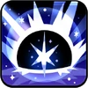

Toppings:


Es difícil decir cuánto tiempo estuvo la solitaria partícula de masa para galletas flotando en el vasto vacío del espacio antes de que el
resplandor de estrellas sin nombre la bendiga con el don de la vida. ¿Fue una mera coincidencia...? Para Stardust Cookie, el calor de muchos
soles era el calor del horno, y los planetas distantes eran sus únicos compañeros en su viaje a la velocidad de la luz a través de galaxias.
Atraído por nebulosas informe y fugaces, guiado por el susurro de las estrellas.
"Mi viaje... continúa."
Esta piedra contiene un pedazo del alma de Stardust Cookie. Imbuido del pulso de estrellas lejanas, ¡llama a las profundidades del cosmos!


se eleva en el cielo y marca al enemigo con el ATK más alto (apunta primero a Cookies) con el Signo de las Estrellas. Luego descenderá
para infligir daño de área a los enemigos, amplificando las desventajas que reciben. Los objetivos recibirán daño adicional dependiendo
de la cantidad de ventajas que tengan actualmente. El Signo de las Estrellas evita que el objetivo obtenga beneficios, disminuye su ATK
y Curación y aumenta el DAÑO recibido.